Activity: Using IntelliSketch
In this activity, you create an ordered sketch then apply relationships, dimensions and variables to the geometry so that you can reliably and predictably change the shape of the profile by editing dimensions.
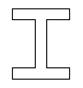
-
The sketch is in the shape of a cross-section of an I-beam.
-
Relationships, dimensions and variables control the width of the web and flanges of the “I” shape.
Create a new part document.
Make sure you are in the Ordered environment.
On the Home tab→Sketch group, choose the Sketch command.
Select the reference plane shown.
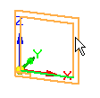
In PathFinder, turn off the display of the base coordinate system and turn on the display of the base reference planes.
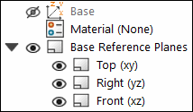
Fit the window and zoom out until the base reference planes appear as shown.
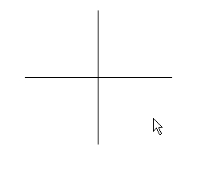
On the Home tab, choose IntelliSketch Options.
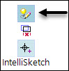
On the Relationships page, set the options shown. Click OK.
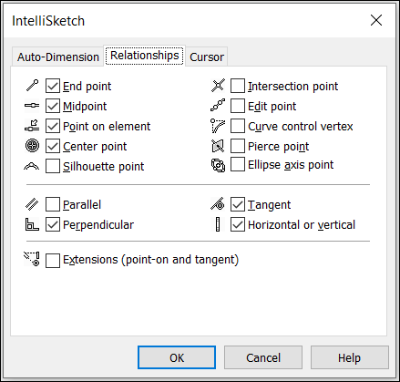
In the IntelliSketch group, the Horizontal or Vertical option makes it recognizable if a line is horizontal or vertical during placement.
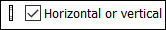
On the Home tab→Draw group, choose the Line command
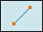
.Draw the first line by positioning the cursor below and left of the reference planes as shown and click to place the first point of the line.
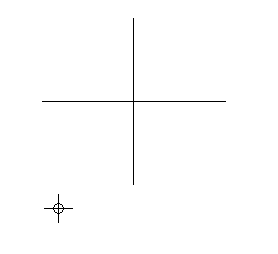
Place the second point by moving the cursor to the right. When the horizontal indicator is shown and the line is approximately in the same position as shown below, click to place the line.
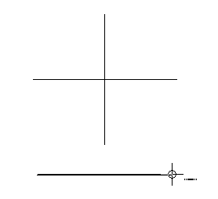
For the remainder of this activity, the images will not show the edit handles (1) and (2) that are attached to the sketch elements.
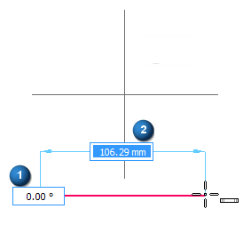
Continue drawing the “I” shape with the following considerations. Draw each segment with the horizontal or vertical indicator displayed. Lengths of the lines are unimportant at this stage.
If you make a mistake, you can delete a line by first clicking the Select tool  , selecting the line, and pressing Delete on the keyboard.
, selecting the line, and pressing Delete on the keyboard.
Also by choosing the Undo command
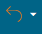
, you can step back through the creation of the sketch.Draw the rough shape of the “I” in a counterclockwise order. Use the alignment indicator to position the endpoint of the next to the last line above the left endpoint of the first line as shown. To activate the alignment indicator for the last segment, brush (move the cursor over without clicking) the horizontal line.
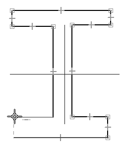
To place the last segment, click on the endpoint of the first line when the endpoint indicator is displayed as shown.
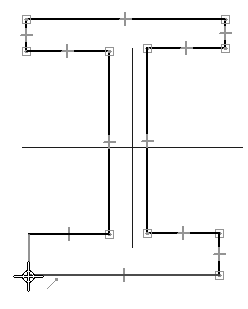
Add relationships to control the behavior of the shape. When you anticipate the need to make a shape symmetrical, it is useful to establish relationships between the geometry of the shape and reference planes. Reference the line segments by numbers as shown.
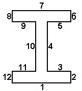
In the Relate group, choose the Horizontal/Vertical command .
Position the cursor over middle of segment 1. When the midpoint indicator displays, click.
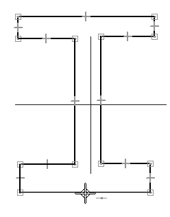
Move the cursor to the top of the vertical reference plane, and when the endpoint indicator displays, click.
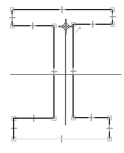
A relationship is applied, represented by a dashed line that forces the midpoint of segment 1 to remain vertically aligned with the endpoint of the reference plane.
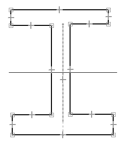
In the Relate group, choose the Equal command  .
.
Select segment 1, then select segment 7. This applies an equal relationship to the lines, which keeps their lengths the same while other constraints alter the shape of the profile. Line segment 1 is equal to line segment 7.
Continue applying the equal relationship between the following lines:
-
2 and 12
-
8 and 6
-
8 and 12
-
11 and 3
-
9 and 5
-
9 and 11
-
10 and 4
Add dimensions to control the size of the shape.
In the Dimension group, choose the Smart Dimension command .
Select segment 1, position the dimension below the line, and then click to place it.
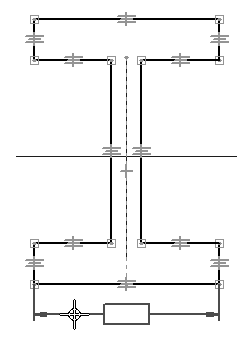
Dimension segment 12 in the same way.
Choose the Distance Between command .
Select segment 10, select 4, position the dimension above the ”I” shape, and then click to place it. Right-click to restart the Distance Between command.
Dimension the distance between segments 1 and 7 in the same way.
Edit the dimensions placed in the previous step. Because of the dimensions and relationships defined, the shape responds to dimensional changes predictably.
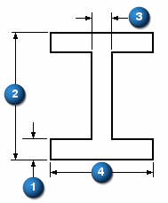
Click Select Tool.
Select dimension (1). Type 15 and then press Enter.
Select dimension (2) and change the value to 120.
Select dimension (3) and change the value to 12.
Select dimension (4) and change the value to 95.
Practice altering the shape by editing the values of the dimensions (1–4) and observe how the shape responds. Return the dimension values to those shown above.
Dimensions and relationships make it easier to control the shape of a profile. Variables are used to make the shape of a profile parametric. Formulas are applied that define mathematical relationships between variables and dimensions. In this step, make the width of the web (dimension (3)) 2/3 the thickness of the flange (dimension (1)), and make the flange height (dimension (2)) 3/4 the flange width (dimension (4)).
Each time a dimension is placed, a randomly named variable is created to represent it. Rename the variables and assign mathematical expressions to further control the behavior of the shape.
Right-click on the 95 mm dimension. Choose the Edit Formula command on the shortcut menu. The Edit Formula command bar displays to edit the dimension name and formula. In the Name: field, change the variable name to D and then press Enter. Click the Select tool to end the dimension edit.
Repeat the previous step to make the following dimension edits:
|
15 mm dimension |
Name=A |
|
120 mm dimension |
Name=B |
|
12 mm dimension |
Name=C |
To enter a formula, click the formula field, type the formula, and press Enter. Basic mathematical operators in formulas can be used:
-
+ to add
-
- to subtract
-
* to multiply
-
/ to divide
Mathematical functions can be grouped with parenthesis if necessary. Many functions are available. For more information, see the Variables Help topic.
Assign a mathematical expression to dimensions named B and D. Right-click the 120 mm dimension and choose Edit Formula. In the Formula field, enter 3/4*D and press Enter.
Edit the formula for the 12 mm dimension. In the Formula field, enter 2/3*A and press Enter.
Right-click the dimension and choose Show All Names. Right-click the dimension and choose Show All Formulas. Return the display to Show All Values.
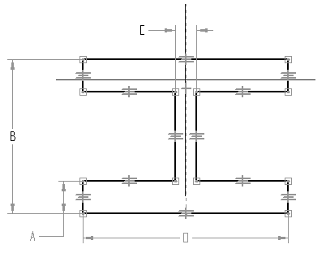
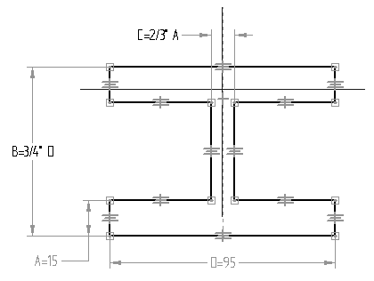
The same operations performed in the previous could also be done using the Variable Table.
On the Tools menu→Variables group, choose the Variables command to display the Variable Table.
Notice that the same fields are available as in the Edit Formula command bar. Click the field to edit, type in the appropriate value, and then press Enter.
The shadowed values represent values that cannot be directly changed because they are controlled by relationships, dimensions, or formulas.
Close the Variable Table by clicking the X in the upper-right corner.
On the sketch, modify the dimension values of (1) and (4) and observe how the sketch responds.
Choose Close Sketch to complete the Sketch.
You can also complete the sketch by clicking the check mark located in the upper-left corner of the sketch window.
On the command bar, click Finish.
Close and save this file as Ishape.par. This completes this activity.
In this activity, you learned how to use dimensions and relationships to control the size and position of 2D geometry in a profile. You also learned how to use mathematical formulas within the variable table to establish relative behavior between geometry. This is useful in establishing design intent within a model. If a critical dimension changes, the profile adjusts itself predictably and accordingly.
-
Click the Close button in the upper-right corner of this activity window.